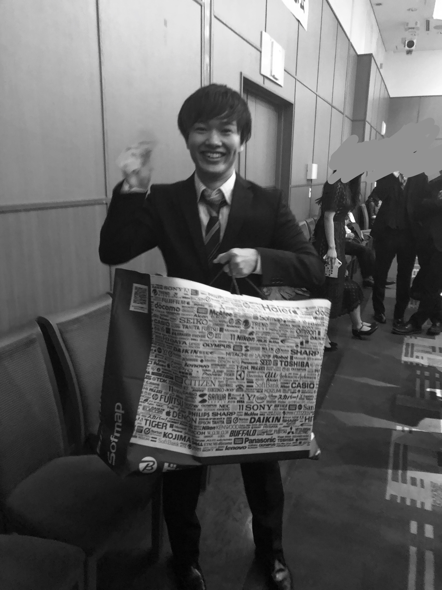
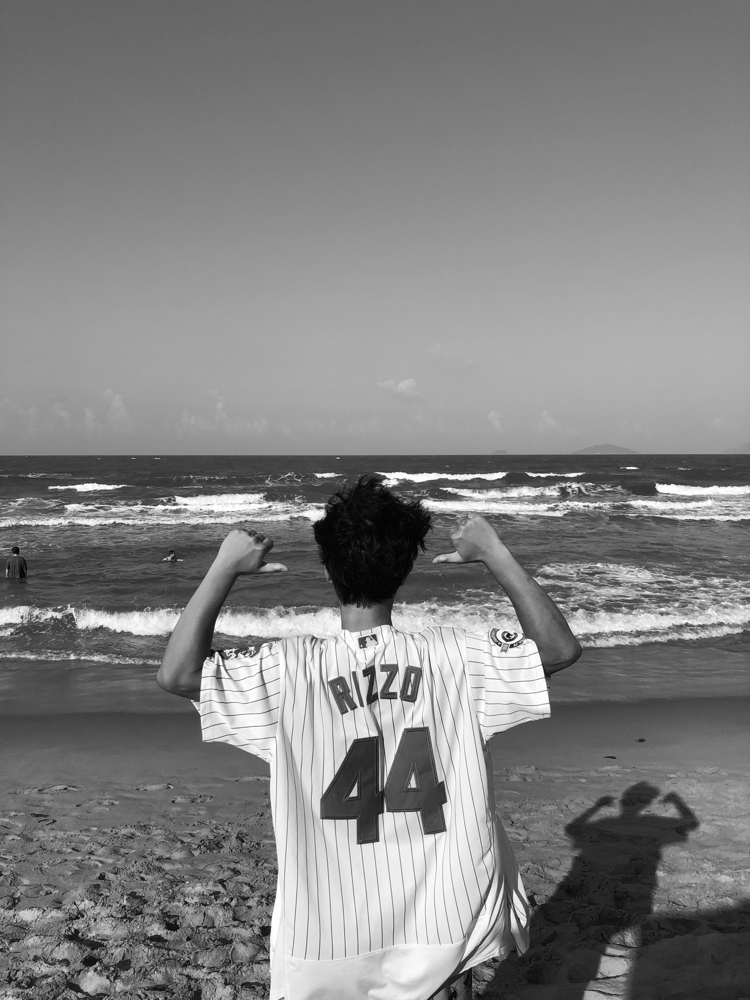

About
鹿児島生まれ,鹿児島育ち.
現在は京都大学で電気電子工学を専攻する21歳の大学3年生.
将来の夢は有名になってナゴヤドームの始球式に呼ばれること,一年かけて世界一周旅行を完遂させること,そして心ゆくまで自分を高めること.
座右の銘は「敬天愛人」.尊敬する西郷隆盛の好んだ言葉.
薩摩隼人の名に恥じぬ生涯を志す.
自称幸運の持ち主.

自称幸運の持ち主.
自称幸運を発揮し同窓会のビンゴ大会で景品をGETした際の様子.
Career
- 1998
- 2004
- -------
- -------
- 2005
- -------
- 2008
- 2011
- -------
- -------
- -------
- 2012
- 2014
- 2017
- 2018
- 2020
- 鹿児島にて誕生
- 幼稚園のかけっこにて首位を独走していたものの,親の掛け声に反応・後退してしまい,最下位でfinish.
- 鹿児島市内の小学校入学.六年間で一生分のイタズラを堪能.中日ドラゴンズのファンとなる.
- ネットゲームにハマる.
- ジュビロ磐田vsガンバ大阪の試合前のリフティング大会にて小学6年生の部優勝.ガンバ大阪のキーパーにエスコートされながらコートに入場.やべっちfcにも映り、地上波デビュー.
- 英検4級合格.
- 高校入学
- 大学受験失敗.地元の予備校での浪人を決意.
- 京都大学工学部電気電子工学科合格•入学.
- 東南アジア3週間バックパック旅行完遂.
Vision
22歳までに基本的なプログラミング言語を複数習得し,自分のプログラマーとしてのビジョンをより明確にする.
23歳までにアプリ開発の技術に磨きをかけ、自分の満足する作品を制作.
25歳までにプログラマーとして就職.
その為に23歳まで学部で電気電子工学,情報工学を学修.
並行してプログラミングの学修も進め,絶えず自身のスキルアップを目指す.

Hobby
プロ野球が好き.物心ついた頃からのドラゴンズファン.
きっかけは同郷の大先輩•福留孝介や井上一樹の活躍を受けて.父の影響も若干有り.
自分でするのも好きにて大学の同好会で活動中.
音楽は吉田拓郎が好き.最も好きな曲は選べない.
あいみょんも聴く.彼女も拓郎の世界観に魅了されたらしいので納得がいく.
その他にはKingGnuや[Alexandros], KEYTALKなどJ-popは幅広く聴く.
日本が大好き.国内旅行は幼い頃から頻繁にしている.
岐阜以西の西日本は全府県にて宿泊経験有り.
一刻も早く東北の地を踏みたい.
ドライブも好き.車で地元の温泉巡りをするのは至高のひと時.
火山灰を浴びたり硫黄泉の香りを嗅ぐのも好き.
2chやまとめサイトで話半分に情報収拾をするのは日課.
マイブームはダーツ.
日常的に焼酎を飲みます.最も好きな銘柄は本坊酒造｢さくらじま｣.ピンクのパッケージとフルーティーな香りが最高.